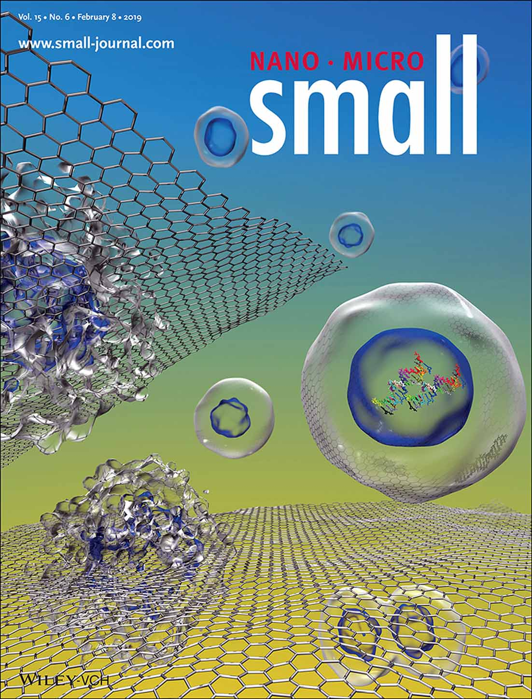
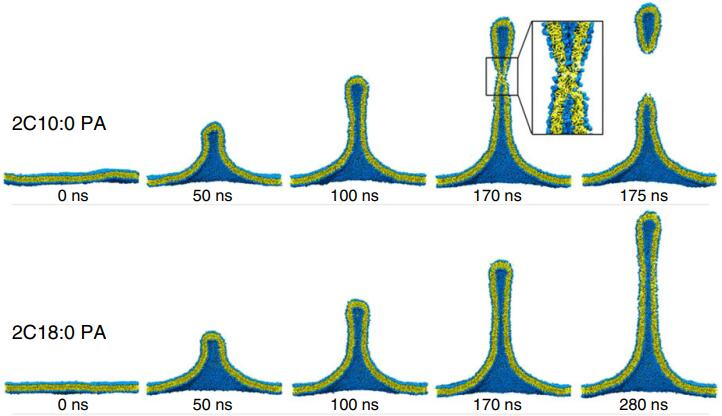

以下为部分代表性论文，更多论文请查看:
Google Scholar: https://scholar.google.com.hk/citations?user=9_Z9kVsAAAAJ&hl=zh-CN
ResearchGate: https://www.researchgate.net/profile/Zhen-Li-144/research
- Jun Zhang, Bojin Zhu, Haoqiang Yuan, Hui Peng, Jie Zhong, Youguo Yan, and Zhen Li*.
Nonlinear relationship between heavy oil viscosity and asphaltene dispersion: A molecular dynamics simulation study.
Chemical Engineering Science 2024, 295: 120173 (IF: 4.7，SCI二区) - Zhen Li, Tiankun Han, Jiawei Li, Bojin Zhu, Youguo Yan, Jun Zhang, and Xiao Wang.
Pathway of Oil-Soluble Additives to Reduce Heavy Crude Oil Viscosity Depends on the Molecular Characteristics of Asphaltene.
Energy & Fuels 2024, 38(6): 4990-4997. (IF: 5.3，SCI三区) - Bojin Zhu, Menglong Yang, Youguo Yan, Jie Zhong, Jiawei Li, Zhen Li*, and Jun Zhang*.
Insights into the effect of water content on asphaltene aggregation behavior and crude oil rheology: A molecular dynamics simulation study.
Journal of Molecular Liquids 2024, 396: 124042. (IF: 6.0，SCI二区) - Jinbei Li, Haoyu Ma, Youguo Yan, Jun Zhang, and Zhen Li*.
Molecular insights into the aggregation mechanism of montmorillonite colloid due to calcium contamination: A molecular dynamics simulation study.
Applied Clay Science 2024, 247: 107191. (IF: 5.6，SCI二区) - Ziqiang Qi, Menglin Wan, Jun Zhang, and Zhen Li*.
Influence of Cholesterol on the Membrane Binding and Conformation of α-Synuclein.
Journal of Physical Chemistry B 2023, 127(9): 1956-1964. (IF: 3.3，SCI二区) - Zhen Li, Ke Gong, Junfeng Wang, Yujian Hao, Youguo Yan, and Jun Zhang*
Molecular Insights into Asphaltene Aggregation in Gas Flooding.
Energy & Fuels 2022, 36(2): 762-770. (IF: 5.3，SCI三区) - Jun Zhang*, Qi Wei, Bojin Zhu, Wendong Wang, Lei Li, Yuliang Su, Peng Wang, Youguo Yan, Jiawei Li*, and Zhen Li*.
Asphaltene aggregation and deposition in pipeline: Insight from multiscale simulation.
Colloids and Surfaces A: Physicochemical and Engineering Aspects 2022, 649: 129394. (IF: 5.2，SCI二区) - Zhen Li, Xiaohong Zhu, Jiawei Li, Jie Zhong, Jun Zhang*, and Jun Fan*.
Molecular Insights into the Resistance of Phospholipid Heads to Membrane Penetration of Graphene Nanosheets.
Nanoscale 2022, 14(14): 5384-5491. (IF: 7.790，SCI二区TOP) - Junfeng Wang, Jiawei Li, Yining Wang, Zhen Li*, and Jun Zhang*.
Polymerization-Induced Self-Assembly of Comb-like Amphiphilic Copolymers into Onion-like Vesicles.
Macromolecules 2021, 54(16): 7448-7459. (IF: 5.985，SCI一区TOP) - Hanqing Lin, Ke Gong, Petr Hykys, Danke Chen, Wen Ying, Zdenek Sofer, Youguo Yan, Zhen Li*, and Xinsheng Peng*.
Nanoconfined Deep Eutectic Solvent in Laminated MXene for Efficient CO2 Separation.
Chem. Eng. J 2021, 405: 126961. (IF: 13.273，SCI一区TOP) - Changxiong Huang, Xiaohong Zhu, Na Li, Xinyao Ma, Zhen Li*, and Jun Fan*.
Simultaneous Sensing of Force and Current Signals to Recognize Proteinogenic Amino Acids at a Single-Molecule Level.
J. Phys. Chem. Lett. 2021, 12(2): 793-799. (IF: 6.470，SCI二区TOP) - Jiawei Li, Junfeng Wang, Qiang Yao, Tao Li, Youguo Yan, Zhen Li*, and Jun Zhang*.
Why Synthetic Virus-like Nanoparticles Can Achieve Higher Cellular Uptake Efficiency?
Nanoscale 2020, 12(27): 14911-14918. (IF: 7.790，SCI二区TOP) - Zhen Li, Yonghui Zhang, Jiale Ma, Qiangqiang Meng, and Jun Fan*.
Modelling Interactions between Liposomes and Hydrophobic Nanosheets.
Small 2019, 15: 1904992. (封面文章，IF: 11.459，SCI一区TOP) - Seung-Yeol Park, Jia-Shu Yang, Zhen Li, Pan Deng, Xiaohong Zhu, David Young, Maria Ericsson, Ruben LH Andringa, Adriaan J Minnaard, Chunmei Zhu, Fei Sun, D Branch Moody, Andrew J Morris, Jun Fan, and Victor W Hsu*.
The Late Stage of COPI Vesicle Fission Requires Shorter Forms of Phosphatidic Acid and Diacylglycerol.
Nat. Commun. 2019, 10: 3409. (IF: 12.121，SCI一区TOP) - Yan Huang, Zhen Li, Zengxia Pei, Zhuoxin Liu, Hongfei Li, Minshen Zhu, Jun Fan*, Quanbin Dai, Mingdao Zhang, Liming Dai*, Chunyi Zhi*.
Solid-State Rechargeable Zn//NiCo and Zn-Air Batteries with Ultralong Lifetime and High Capacity: The Role of a Sodium Polyacrylate Hydrogel Electrolyte.
Adv. Energy Mater. 2018, 8: 1902288. (IF: 24.884，SCI一区TOP) - Zhen Li, Yonghui Zhang, Chun Chan, Chunyi Zhi*, Xiaolin Cheng*, and Jun Fan*.
Temperature-Dependent Lipid Extraction from Membranes by Boron Nitride Nanosheets.
ACS Nano 2018, 12: 2764-2772. (IF: 13.903，SCI一区TOP) - Zhen Li, Pan Wang, Yunyun Ma, Jun Zhang*, Caili Dai, Youguo Yan, Bing Liu.
Tuning the Self-Assembly of Surfactants by the Confinement of Carbon Nanotube Arrays: A Cornucopia of Lamellar Phase Variants.
Nanoscale 2015, 7: 6069-6074. (IF: 7.760，SCI一区TOP) - Zhen Li, Pan Wang, Bing Liu, Yefei Wang, Jun Zhang*, Youguo Yan, Yunyun Ma.
Unusual, Photo-induced Self-Assembly of Azobenzene-containing Amphiphiles.
Soft Matter 2014, 10: 8758-8764. (IF: 4.029，SCI二区TOP) - Zhen Li, Pan Wang, Youguo Yan, Run Wang, Jun Zhang*, Caili Dai*, and Songqing Hu.
Tuning and Designing the Self-Assembly of Surfactants: The Magic of Carbon Nanotube Arrays.
J. Phys. Chem. Lett. 2013, 4: 3962-3966. (IF: 6.687，SCI二区TOP)
稠油黏度与沥青质分散性的非线性关系
油溶性降黏剂降黏机理取决于沥青质分子特征
稠油中微量水的致黏机理
地层“钙侵”导致钻井液滤失的分子机制
胆固醇对α-突触核蛋白膜结合的调控机制
气驱中沥青质聚沉的分子机制
输油管道中沥青质凝结的介观模拟

磷脂分子头基对二维材料细胞膜毒性的阻碍机制

聚合诱导自组装形成洋葱状结构

深共晶溶剂协助二氧化碳分离

氨基酸测序纳米器件设计

仿病毒纳米颗粒跨膜输运机制

囊泡与疏水纳米片相互作用的粗粒化模拟

脂质烃尾长度变化诱发生物膜分裂

凝胶聚合物电解质的筛选及分子机制

BN二维材料与细胞膜相互作用的温度响应性

限域空间中自组装层状相变体的形成

光响应自组装体系设计

限域空间中双螺旋自组装结构的形成